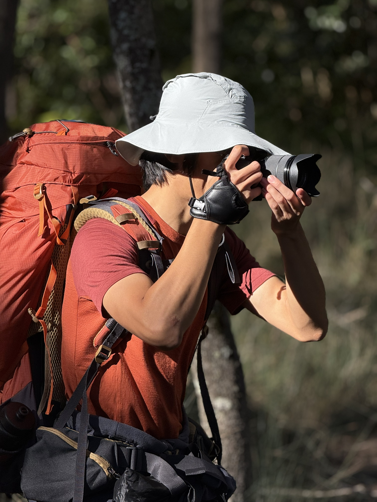

3D 打印与快速原型
将创意转化为可触摸的实物，从概念验证到功能原型。
生物医学工程师 · 建造者 · 探索者
用工程方法做生物与人之间的连接，也保留对世界的好奇心。
悉尼大学生物医学工程荣誉学士背景，实践覆盖快速原型、嵌入式开发、生物信号处理与实验技术。

01 / Personal
我持续关注生物、自然博物学和人与环境的关系，也喜欢让工程、观察与审美在同一个项目里相遇。
将创意转化为可触摸的实物，从概念验证到功能原型。
连接传感器、控制与算法，构建完整的采集与分析系统。
在微观尺度进行精密控制，探索等离子体表面处理的应用。
Field notes
02 / Work
从生物医学工程、制造与装配，到面向真实约束的原型和流程改进。
Education
2017年8月 - 2024年7月
Practice
Open Source
Experience
Skills
Contact
如果你对项目合作、技术交流，或任何值得探索的跨学科话题感兴趣，欢迎联系。